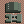

Shop and Purchase Rules
Although purchases in general are a non-action (compounds and variants being the exceptions), each shop section follows slightly different purchase rules. These are all explained here, followed by the lists of items.
An items Owner is ONLY the player on the items Owner tab.
"Limit 1" items may only be purchased once per player per update.
Compounds are purchased by making a Build action. Terrain is purchased with the Compound, and cannot be added after it is built.
Defenses and Add-Ons may only be purchased for a compound you Own, and may be purchased at any time, even if you are not on the compound.
You may purchase mobile weapons, WMDs or pilots at your position at any time, or for a base/ship/fleet if you are on it. You may also purchase mobile weapons, WMDs or pilots for a base/ship/fleet you Own at any time, even if you are not on it.
Ships may be purchased at your position or on a base that you Own at any time IF that position is Friendly Territory.
Services may only be purchased at your position, and may only be purchased in Friendly or Contested Territory. They are 1/2 price in Friendly Territory.
Variants may only be purchased for a unit by its Owner, and it requires a Refit action. Soft refits can be made anywhere, but Hard refits must be made on compounds.
Compounds and Compound Accessories
Compounds
Compounds, which consist of Facilities and Installations, may be purchased through a build action, and consist of any stationary defensive location. Fortresses and Fortress equipped colonies count as Installations and can control territory, while the rest of the compounds count as Fortifications and cannot control territory. All compounds must have a Terrain chosen from the Terrain list.
Only up to four Compounds at a given Position will produce income.

Ruin
Even the most powerful defensive position in history at some point turns to rubble due to war, deceit, or the passage of time. Every compound that is destroyed becomes a Ruin, which retains its terrain bonuses and can still field a small fighting force. Ruins do not contest or control territory, but can still be moved to as a seperate position, and can be rebuilt back to a Fortification in the same area.
-
- Standard defenses: None, max. 0x
- Built-in accessories: Makeshift HQ
- Hangar capacity: 1x infantry, 2x mobile suits, 1x vehicle, 1x mobile armor.
- Income: None
- Restrictions: Ruins count as the grade of territory of the Location they reside in, and may not purchase add-ons other than minefields, trenches and listening posts.
- Cost: N/A, created as the result of a destroyed compound
- Special: Ruins can be rebuilt into a Fortification for a build action and 275 RP.
Derelict Colony
Hundreds of space colonies were destroyed in the early weeks of the war, and while most are now only floating debris, a few remain as monstrous hulks, possibly with a few areas still pressurized. These derelicts can be important tactical positions to a military, which can hide ships inside the colonies or their monstrous shadows. Derelicts can be purchased, but may also be created as the result of a destroyed Colony, much like Ruins.
-
- Standard defenses: None, max. 2x
- Built-in accessories: Damaged Mirrors, Damaged Hydroponics, Damaged Propulsion System, Ship Dock, Makeshift HQ
- Hangar Capacity: 1x infantry, 6x mobile suit, 8x vehicle, 2x mobile armor
- Income: None
- Restrictions: Only purchasable at Sides 1, 2 or 4. May not purchase add-ons other than minefield and listening post.
- Cost: 200 RP
- Special: Derelicts may be repaired into functional colonies for a build action and 800 RP. Derelicts may be purchased two at a time in a bunch formation for 375 RP.

Fortification
In essence, a mini-base. These are little more than a hanger for mobile suit placement, and an airfield. They have no walls guarding it, no heavily armored buildings, etc, but are good for the economist, or somebody wanting a cheap, quick, stopgap measure to guard something.
-
- Standard defenses: None, max. 20x
- Built-in accessories: Airfield, Hangar, Barracks, Cellblock, Radar/Communications Tower, HQ, Port if Coastal/Island/Naval
- Hangar capacity: 4x infantry, 8x mobile suit, 10x vehicle, 2x mobile armor
- Income: 40 RP
- Cost: 300 RP
- Special: Fortifications can be upgraded to a Fortress with a second Build action.

Mine
The Mine is a fairly straightforward operation, yet it is an excellent money maker. Mines are built and deployed on their own, or attached to a Fortress as an add-on. They slowly suck minerals, Helium 3, ore, Vespine Gas, crude oil, Tiberium, or whatever other local asset out of the ground, and bring income to it's owner.
-
- Standard defenses: None, max. 5x
- Built-in accessories: Mining Compound, Airfield, Hangar, Barracks, Radar/Communications Tower, HQ
- Hangar Capacity: 2x infantry, 4x mobile suit, 1x vehicle, 1x mobile armor
- Income: 80 RP
- Cost: 300 RP
- Special: One Mine can be purchased on an existing Fortification or Fortress as an add-on for a build action.
Asteroid Mine
An asteroid half the size of a colony, this is a true symbol of economic might. Passages colonize its interior, making it easy to mine valuable ores from inside. Due to the activity on a mine, few fixed defenses can be placed on an active Mine, but you can always move one Asteroid Mine to orbit around a friendly colony for protection.
-
- Standard defenses: None, max. 5x
- Built-in accessories: Mining Tunnels, Hangar, Ship Dock, Barracks, Comm Room, HQ, Propulsion System
- Hangar Capacity: 2x infantry, 4x mobile suit, 5x fighter, 1x mobile armor
- Move Rate: 1/4th normal
- Income: 80 RP
- Cost: 350 RP
- Special: One Asteroid Mine can be purchased to orbit an existing Space Colony for a build action.

Fortress
The Gundam equivalent of a military base, a Fortress is a symbol of power wherever it is constructed and allows you to control the nearby terrain. A Fortress is essentially a group of factories, warehouses, barracks, hangars and such surrounded by a large, thick concrete wall. Fixed defenses can be purchased as well to increase the ability of your base to survive an attack.
-
- Standard defenses: None, max. 40x
- Built-in accessories: Outer Wall, Repair Bay, Airfield, Hangar, Barracks, Cellblock, Radar/Communications Tower, HQ, Port if Coastal/Island/Naval
- Hangar Capacity: 10x infantry, 25x mobile suit, 40x vehicle, 5x mobile armor
- Income: 120 RP
- Cost: 900 RP
- Special: Fortresses can only be built with a build action on an existing Fortification.

Mirrored Space Colony
This sixty-kilometer long cylinder is home to five million people. Inside, people go about their daily lives as though they were on Earth. Although designed to house a civilian population, space colonies can be equipped with a small defensive armament, and have a large hangar. While a Facility normally, a Fortress can be built inside a Space Colony, upgrading it to an Installation.
-
- Standard defenses: None, max. 10
- Built-in accessories: Reflective Mirrors, Hydroponics bays, Propulsion System, Repair Bay, Hangar, Barracks, Ship Dock, HQ, Comm Room
- Hangar Capacity: 4x infantry, 17x mobile suit, 20x vehicle, 3x mobile armor
- Move rate: 1/4th normal
- Income: 120 RP
- Restrictions: Only purchasable at Sides 1, 2 or 4
- Cost: 1,000 RP
- Special: Space colonies can be purchased two at a time in a bunch formation for 1,750 RP. A Fortification may be built on a Mirrored Space Colony.
Terrain
Each Compound must be built with a type of Terrain. While standard and coastal are free and make limited changes to the compound, there are also more expensive options that can deter enemy units, such as Desert or Arctic. Some bases must have a paid-for option to be placed in a specific area, such as Naval or Island for a compound in an ocean sector. You can buy combinations of terrain, but some combinations aren't allowed. Please use common sense.

Standard
Built in a normal, pleasant or temperate environment on the plains, steppe or rolling hills, these fortresses are often the cheapest to construct and maintain, but do not offer the geographical bonuses of other options. In the case of Space Colonies and Asteroid Mines, this is the normal option.
-
- Advantages: None
- Disadvantages: None
- Cost: Free
Coastal
Built into the coast, these fortresses include a harbor for tendering marine vessels and controlling the seas. Although this will increase the number of theatres your fortress can effectively support, at the same time it will increase the number of ways in which it can be attacked.
-
- Advantages: Naval ships can move to and be repaired on a Coastal base.
- Disadvantages: Allows the base to be amphibiously assaulted.
- Cost: Free

Arctic
In order to facilitate your rule in frozen tundra type areas, these specialized fortresses will be necessary. Outfitted with much more insulation on structures, better anti-freeze systems and other such details, fixed defenses can function well enough here, but performance of mobile suits and mobile armors will be hampered. Defending player-controlled mobile suits and armors can be outfitted with gear to survive such an environment, though only specialized grunt suits can operate at peak efficiency.
-
- Advantages: Cold Climate mobile suits can work wonders here while other, standard-issue suits will take a beating.
- Disadvantages: Only Cold Climate grunt suits can work at peak efficiency here. Standard mobile suits will grind to a halt in the cold.
- Cost: 50 RP

Desert
In need of extra cooling systems and other such gear, fortresses in desert climates and on barren worlds will need these extra outfittings. Again, defending player-controlled mobile suits can be outfitted with gear to survive the extreme environment, but only specialized mobile suits operate at peak efficiency.
-
- Advantages: Mobile suits designed for these extreme environments work well here.
- Disadvantages: Sand can badly clog up vents and weapons on conventional mobile suits and mobile armors.
- Cost: 50 RP

Sealed
Cities on moons and the martian surface are semi-underground, buildings built on the surface with extensive basements connecting them, and the entire complex sealed from the inhospitable void outside. Most cities on the moon are built around craters, which facilitate this kind of building perfectly. These cities, and cities that are completely underground, are the only possible way to build a habitable settlement on the lunar or martian surface.
-
- Advantages: Allows the compound to be built on a moon or Mars.
- Disadvantages: Accidental explosions can cause depressurization easily.
- Cost: 50 RP

Tropical
In need of extra radiators and other such gear, tropical and heavily forested climates spell trouble for mobile suits. Defending player-controlled mobile suits can be outfitted with gear to prevent moisture and undergrowth from damaging systems, but only specialized mobile suits operate at peak efficiency.
-
- Advantages: Mobile suits designed for these extreme environments work well here.
- Disadvantages: Moisture can badly damage electronics and weapons on conventional mobile suits and mobile armors.
- Cost: 50 RP

Island
Built on top of a small island with the coast as perimeter defenses, these fortresses are difficult to get on or off of. Attacking units will find the combination of having to cross the water to fight on land aggravating, whereas defending units will find retreat an equally difficult option.
-
- Advantages: Attacking mobile suits will have to move across water or air to assualt the base. Non Hovercraft Land Battleships cannot move to this base.
- Disadvantages: The islands small size will make it more susceptible to bombing, and retreat will be difficult.
- Cost: 100 RP

Mountain
Built into the side of a mountain, mountain fortresses are almost as hard to capture as underground bases, though easier to destroy. Attacking mobile suits will have to scale the mountain itself all the while being hailed by machine gun and mega particle cannon fire. Also, thanks to thinning atmosphere, aircraft cannot function with their usual lethality.
-
- Advantages: Enemy aircraft will be restricted and land forces will advance more slowly.
- Disadvantages: Your own aircraft will have a hard time due to thinning atmosphere.
- Cost: 200 RP
Urban
Genocidal maniacs love this little ditty, your base is built right in the middle of a massive city! Maneuvering is hard, firing without hitting civilians is harder, and battles will look like the first episode of Robotech. If combined with an underground base, you could literally create the most advanced base in the history of Anime. Yes, NERV is now at your disposal.
-
- Advantages: The city this base is placed inside produces an income, much like a mine, and the buildings provide good cover for friendly units.
- Disadvantages: To put it bluntly, the civilians will hate you.
- Income: +40 RP
- Cost: 250 RP

Naval
Essentially a gigantic ship, a floating Naval Fortress floats on the surface of the ocean, either anchored to the ocean floor, right along the edge of a beach, or mindlessly wandering the seven seas. From here, submarines, marine mobile suits and marine mobile armors can call home.
-
- Advantages: These fortresses make controlling the seas much more feasible and make attack from conventional mobile suits nearly impossible. Non-Hovercraft Land Battleships cannot move to this Fortress.
- Disadvantages: The large pontoons that keep these structures afloat are excellent targets for mobile armors and submarines that manage to get close enough.
- Note: Naval compounds can move anywhere a Naval ship can move at a 1/4 rate.
- Cost: 300 RP

Space
Large floating spacedocks lacking gravity, a handful of these were made prior to the construction of the space colonies, facilitating the original migrations to Jupiter and the Asteroid Belt. While they have served their purpose economically, Space Fortresses have a new niche as military bases, cheaper to construct than building a fortress inside of a space colony.
-
- Advantages: More compact than a space colony and entirely a military installation, it is much more difficult to infiltrate this fortress than a space colony with a military base inside it.
- Disadvantages: The lack of gravity, as well as lack of size, can cause problems with allied forces.
- Note: Space Fortresses can move at 1/4th the normal movement rate.
- Cost: 300 RP
Atmospheric
Using multiple Minovski-craft compressors, much like those used on Zeon airborne mobile armors, it is possible to levitate a fortress in orbit, allowing it reign over the wild blue yonder. Halfway between space and earth, an Atmospheric Fortress is excellent for monitoring movement on and off a planet.
-
- Advantages: Because of its altitude, the number of enemy units that can actually attack such a base is very limited. Air units cannot fly high enough, and Space units will be fighting dangerously close to terminal descent elevations.
- Disadvantages: Like the floating Naval Fortress, the Minovski craft compressors are good targets.
- Cost: 500 RP
Underground
Perhaps one of the hardest to attack fortresses available, an underground fortress is built completely underground, save for a few camouflaged gates. Pop-up accessories are added to all fixed defenses, allowing them to pop-up out of the ground and surprise enemy units. Even if enemy units manage to locate the entrances to an underground fortress, it will still be hard to take through winding passages and tight corridors.
-
- Advantages: These bases CANNOT be destroyed by anything less than a well-placed tactical nuclear warhead or a full-blown colony drop.
- Disadvantages: There's only one really... Cost! These fortresses are expensive.
- Cost: 750 RP
Combo
Multiple base locations can be purchased at one time for a compound, although some combinations (Airborne+Underground?) are impossible. Don't be a jackass.
Add-ons
While compounds come with their own integral hangars, HQ bunkers and what have you, additional and more sophisticated buildings can be purchased at additional price. These add-ons can be targetted and destroyed by enemy attack, and while integral features of a base can be repaired, add-on features must be repurchased.
Minefield
A simple field of explosive proximity mines, this can be used to delay an enemies advance into a fortress. There are three types of minefield, land mines, underwater mines and space mines, and each must be purchased seperately. Minefields can be purchased while your compound is under siege, albeit at double price.
-
- Note: May be underground, underwater or in space, terrain permitting
- Cost: 150 RP (300 if sieged)

Listening Post (D)
A small outpost at the edge of a bases controlled area, designed as an early warning system against attack. Usually not armed, these posts seek to deter scouts and surprise attacks on the base proper.
-
- Effect: Acts as a detector unit. (D)
- Cost: 200 RP

Perimeter Wall
An outer wall designed to repel a first wave of attack, this add-on enlarges the effective area of a compound, allowing for more defensive emplacements. If purchased for a Space Colony or Asteroid, this in effect redesigns the colonies hull for military use.
-
- Effect: +10 maximum defenses.
- Cost: 200 RP

Trenches
Simple and affordable, mobile suit sized Trenches can be constructed to give your MS defenses just a little bit more surviveability. Unlike most things, Trenches can be purchased while your compound is under seige, albeit at double price.
-
- Note: May be underground, terrain permitting
- Cost: 200 RP (400 if sieged)

Enlarged Barracks
Even though the glory of combat has gone to the mobile suit, infantry can still make a difference, ground forces being required to maintain control of an area or capture an enemy ship. Large bases will increase the size of their barracks, incorporating more security personnel.
-
- Effect: Maximum hangar space +10 infantry.
- Cost: 250 RP

Enlarged Cellblock
While all fortresses carry simple cellblocks, these can be enlarged to make it much more difficult for a captured pilot to escape. This add-on functions as a normal Cellblock where none exist naturally.
-
- Cost: 300 RP

Hospital
All fortresses have clinics where front lines doctors patch the injured up as best they can, but few can boast actual military hospitals. These buildings will assist in tending to the wounded, keeping people fighting even during a long siege.
-
- Effect: Reduces all PCs injury times by 1 while on the compound.
- Cost: 300 RP (200 on Urban)

Enlarged Hangar
Extremely important locations will enlarge and add secondary hangars, to increase the number of servicable units in their territory.
-
- Effect: Maximum hangar space +10 mobile suits and +10 tanks/fighters.
- Cost: 400 RP

Targeting Facility
A complex radar, sonar, infrared, and audio tracking station, these facilities stay in the fairly safe portions of a land Fortress for protection and to provide targeting data to friendly turrets, improving their accuracy.
-
- Cost: 400 RP

Colony Booster
To move your colony quicker or to initiate a colony drop, you need one of these boosters. Simply a large rocket that latches onto the backside of your colony, the Booster is an essential part of all colony movement and allows your colony to move at half the speed of a regular mobile suit, rather than one fourth.
-
- Cost: 750 RP

Spaceport
Necessary for construction on terrestrial fortresses, the Spaceport allows regular space warships and mobile suits to land, refuel, and be equipped with single-use boosters to get back into space again, allowing otherwise space-bound vessels and mobile suits to enter Earth. Spaceports may be purchased for a Lunar fortress, but are not necessary for a ship to escape the moons gravity well.
-
- Income: +40 RP
- Cost: 1,000 RP
War Factory
The War Factory, once constructed, can harvest the resources needed and then produce any product in the shop. How many can be produced in a one-week production run is based on cost. A War Factory is somewhat different from a mine, as it produces weaponry even during a siege.
-
- Effect: The factory is credited 500 RP every Sunday, which can be used at any time to purchase shop materials at the factories location. Remaining RP is stockpiled until spent.
- Cost: 2,000 RP

Nuclear Charge
The ultimate in "Base Insurance," this is actually an Inter-Continental-Ballistic-Missile with the rocket section removed and stripped down to the bare essentials. This charge sits in the middle of a Fortress in wait to be activated. After the entire base's defenses have been destroyed, this charge is activated and will detonate when a mobile suit, tank, or even infantry triumphantly march into the base.
-
- Cost: 3,000 RP
Defenses
Clearly even the best base will fall eventually without its own defensive armament. Turrets and gun emplacements can be purchased up to a bases defensive emplacement maximum, to assist in defending the area. (A) marked defenses cannot make All Range Attack actions, but will shell enemy fleets during a siege.

AA machine gun turret
While only remotely effective against mobile suits, these open-ended turrets are inexpensive and excellent against fighter aircraft.
-
- Armament: Four-barreled 45mm rapid-fire machine gun
- Effective VP: 16 (32 with targetting facility)
- Cost: 7 RP

Depth Charge launcher
For anti-submarine warfare, the Depth Charge launcher is the best there is.
-
- Armament: Two-tube Depth Charge discharger
- Effective VP: 16 (32 with targetting facility)
- Cost: 14 RP
SAM battery
A small AA missile turret, this is more effective than a machine gun turret, but runs out of ammunition quickly.
-
- Armament: Four-tube SAM missile launcher (10 rounds)
- Effective VP: 16 (32 with targetting facility)
- Cost: 14 RP

Defense Satellite
A small automated drone for perimeter defense against mobile suits.
-
- Armament: 1x Ballistic Cannon (8 rounds), 2x 12-tube missile rack (1 round)
- Effective VP: 16 (32 with targetting facility)
- Note: Only purchasable in space. Max 12 per compound, does not count towards max. defenses.
- Cost: 21 RP

Cannon turret
A cheap, conventional ground to ground cannon turret.
-
- Armament: Two-barreled 180mm cannon
- Effective VP: 16 (32 with targetting facility)
- Cost: 21 RP

MPC turret
Small, fast tracking Mega Particle gun for taking out mobile suits, the ultimate in AA technology.
-
- Armament: 2-barrel Mega Particle Cannon
- Effective VP: 16 (32 with targetting facility)
- Cost: 70 RP

Howitzer (A)
The ultimate in artillery weaponry, the Howitzer is perfect for anti-Siege warfare.
-
- Armament: 880mm rifled howitzer
- Effective VP: 16 (48 with targetting facility)
- Cost: 140 RP

Large MPC (A)
A large, slow moving, anti-ship Mega Particle Cannon, this packs a punch, but has a slow rate of fire compared to the Howitzer.
-
- Armament: Two-barreled Large Mega Particle Cannon
- Effective VP: 16 (48 with targetting facility)
- Cost: 210 RP

Space defense Platform
Built into an Asteroid, this is the best thing you can get for defending a space-based location.
-
- Armament: 12x 2-barrel beam gun turret, 2x heavy rocket launcher turret
- Note: These platforms do not count towards the total defenses amount. They are limited to four per location. Only buildable in space.
- Effective VP: 32 (48 with targetting facility)
- Cost: 315

Anti Orbit Missile Array (A)
This missile launcher fires warheads into a high orbit, specializing in being able to take out troops orbital dropping onto a base.
-
- Note: Only buildable on Earth or Mars.
- Armament: 4-silo extended range warhead launcher
- Effective VP: 16 (48 with targetting facility)
- Cost: 525 RP
Mobile Weapons
Ships, Compounds and players MS Teams have hangar slots, which can be filled with different mobile weapons. A hangar is divided into the following different kinds of slots: Cargo, Infantry, Tank, Aircraft, Vehicle, Mobile Suit and Mobile Armor. Each mobile weapon takes up a slot, but certain unit types can only go in certain slots. Use the following scale for referencing what items can go where.
Cargo - Any slot
Infantry - Any slot but Cargo
Tanks - Tank, Vehicle, Mobile Suit, Mobile Armor
Aircraft - Aircraft, Vehicle, Mobile Suit, Mobile Armor
Mobile Suit - Mobile Suit, Mobile Armor
(L) Mobile Suit - 2x Mobile Suit, Mobile Armor
Mobile Armor - Mobile Armor
Infantry
Marines
No amount of technological advancement will replace the footsoldier. Although most effective against enemy infantry, crack marines have been known to kill a mobile suit on occasion.
-
- Unit size: 12 marines
- Equipment: Beretta 92, Grenades
- Optional Equipment: FN SCAR, FN MINIMI, M136
- Combat Ability: 22 CP per level
- Cost: 7 RP
Tanks
Type 61
A heavily-armed double-barreled Main Battle Tank echoing most twentieth-century designs; despite its age its large cannons pose a reasonable threat to Zeon mobile suits.
-
- Fixed Armaments: 2x 150mm smoothbore cannon, 1x 12.7mm machine gun, 1x 7.62mm machine gun turret, 8x grenade launcher (1 round)
- Optional Armaments: Explosive or smoke grenades
- Optional Equipment: None
- Cost: 7 RP
Type 74 (D)
Using a hovercraft system instead of wheels, the Type 74 uses its superior mobility to acquire targeting data on distant enemy units.
-
- Fixed Armaments: 1x 6-barrel 20mm Gatling, 2x 4-tube grenade launcher
- Optional Armaments: Explosive or smoke grenades
- Optional Equipment: None
- Cost: 28 RP
Aircraft

Ball
The final production combat space pod. Federal tacticians have wisened up since the K-type; the RB-79 is intended to defend Federal capital ships at close range.
-
- Fixed Armaments: 1x 180mm cannon (20 rounds)
- Optional Armaments: None
- Optional Equipment: None
- Cost: 2 RP
Fanfan
A tiny hovercraft used to defend Federal bases against Zeon infantry; it is quite nimble, but it lacks any substantial weaponry.
-
- Fixed Armaments: 2x 5-tube missile launcher (1 round), 4x 9mm vulcan gun
- Optional Armaments: None
- Optional Equipment: None
- Cost: 2 RP
Fly Manta
A better armored ground suppression fighter bomber. It has respectable speed and maneuverability, though its loiter time leaves something to be desired.
-
- Fixed Armaments: 2x 30mm nose vulcan, 2x 3-tube missile launcher (1 round)
- Optional Armaments: None
- Optional Equipment: None
- Cost: 7 RP
Tin Cod
Another holdover from the 60's Rearmament Plan; the Tin Cod mostly resembles a pre-UC fighter. Its long-range missiles and longer loiter time give it an edge over the Zeon's Dopp, but it lacks close-in combat abilities.
-
- Fixed Armaments: 4x 25mm vulcans
- Optional Armaments: 2x Hardpoint, can arm missiles, fuel tanks or small bombs
- Optional Equipment: None
- Cost: 7 RP
Saberfish
A space superiority fighter left over from the 60's Rearmament Plan; it sports a high overall speed but is ineffective without a numerical advantage.
-
- Fixed Armaments: 4x 25mm vulcan, 12x rocket launcher (1 round)
- Optional Armaments: None
- Optional Equipment: None
- Cost: 21 RP
Jet Core Booster
A mass-produced version of the White Base's Core Booster, intended for atmospheric combat. It mounts the usual cadre of weapons, plus limited bombing and ground suppression capability.
-
- Fixed Armaments: 4x 25mm vulcan, 50mm cannon, 2x 2-tube missile launcher (1 round)
- Optional Armaments: 1x hardpoint, mounts missile, fuel cell or large bomb
- Optional Equipment: None
- Cost: 24 RP
Depp Rog
A very large, very heavy bomber, and the backbone of the Federal air offensive. It's designed for high-altitude carpet bombing, and can carry virtually any conventional ordinance.
-
- Fixed and Optional Armaments: Bombs. Lots and lots of bombs. 6x missile launcher (3 rounds)
- Cost: 28 RP

Dish (D)
A small, extremely fast aircraft built exclusively for terrestrial high-altitude reconnaissance. Its oversized external fuel tanks provide it with a long loiter time over enemy territory, but that's about all it's good for.
-
- Fixed Armaments: 1x 25mm vulcan
- Optional Armaments: None
- Optional Equipment: None
- Cost: 28 RP
Don Escargot
A multirole gunship armed with several anti-air and anti-ground weapons; it also doubles as a coastal submarine hunter, toting various ASW technology.
-
- Fixed and optional Armaments: 4x 25mm AA machine gun turret, 2x Missile Launcher (3 rounds), lots and lots of ASW weaponry.
- Cost: 28 RP
Mobile Suits
Generic Use Mobile Suits
These mobile suits are designed to operate in all environments with relatively equal effectiveness. All mobile suits have anti-personnel weapons which are not listed.

GM
The universal grunt of the Federal forces. The GM lacks enough reactor power to utilize a full-sized beam rifle, so it's usually deployed with conventional ballistics or in a close-combat situation; it is lighter, more maneuverable, and marginally faster than Zeon's Zaku line.
-
- Fixed Armaments: 2x 60mm head vulcan, Beam saber
- Optional Armaments: beam spray gun (10 round e-cap), 90mm machine gun (20 round magazine)
- Optional equipment: tower shield
- Cost: 105 RP

GM Command/GM Command Space
Available in both a colony defense and space combat role, the GM Command is a late-war high-performance mobile suit for areas expecting heavy combat. It is much faster and better armed than the original GM, and is more than a match for a good deal of Zeon technology.
-
- Fixed Armaments: 2x 60mm Head Vulcan, 2x Beam Saber
- Optional Armaments: beam gun (15 round charge), 90mm Machinegun (20 round magazine)
- Optional Equipment: shield, stores 2 90mm magazines, grenades (3)
- Cost: 225 RP
Guncannon MPT
A simplified, lightened version of the original Guncannon, intended for medium-range fire support. Another late-war production, it features heavy armor and a substantial weapons complement.
-
- Fixed Armaments: 2x 200mm Cannon (20 rounds), 2x 60mm Head Vulcan
- Optional Armaments: 100mm Machinegun (32 round magazine), beam spray gun (10 round charge)
- Optional Equipment: grenades (4)
- Cost: 270 RP
GM Sniper II (A)
A top tier GM intended for use by experienced pilots and officers, the GM Sniper II brings a lot of versatility to the table. Operable in all theatres, with a full fledged beam rifle and advanced sensor suite, this mobile suit is well suited to any situation.
-
- Design Features: Advanced Targeting Visor
- Fixed Armaments: 2x beam saber
- Optional Armaments: 90mm machinegun (20 round magazine), beam rifle (20 round charge), ballistic sniper rifle (5 round magazine)
- Optional Equipment: shield, stores 2 90mm magazines, grenades (3)
- Cost: 375 RP
Space Use Mobile Suits
Although operable on land, these mobile suits are designed specifically for space warfare, and many additional thrusters, verniers and design features will be useless in a terrestrial theatre.
GM E
A preproduction space-combat GM put forth mostly as a stopgap; its combat prowess is about equal to the Zeon's Rick Dom, though it still lacks the beam weapons of its production run counterparts.
-
- Fixed Armaments: 1x Beam Saber, 2x 60mm head vulcan
- Optional Armaments: 90mm machine gun (20 round magazine)
- Optional Equipment: tower shield, grenades (3)
- Cost: 229 RP
Land Use Mobile Suits
Although a pilot could wear a normal suit and fight with these units in space, they become effectively stationary turrets, not mounting the directional thrusters and verniers necessary for space combat.
Guntank MPT (A)
Even less of a mobile suit than the original Guntank, the mass-produced model offers a simplified design and, though the elimination of the Core Block System, a cheaper overall cost.
-
- Fixed Armaments: 2x 120mm Cannon (30 round magazine), 2x 4-barrel 40mm hand vulcan
- Optional Armaments: None
- Optional Equipment: None
- Cost: 210 RP
GM Ground (Limit 1)
Developed prior to the deployment of the basic GM, the GM Ground Type is armored with Lunar Titanium, making it essentially as durable as the original RX-78. It's maneuverability is somewhat inferior to the normal GM's, and it cannot utilize beam weaponry, but it has few other flaws.
-
- Design Features: luna titanium armor
- Fixed Armaments: 2x Beam Saber
- Optional Armaments: 100mm machine gun (32 round magazine), 305mm GM bazooka (7 round magazine)
- Optional Equipment: arm shield, grenades (3)
- Cost: 455 RP
GMPGT (Limit 1)
A mass-produced Gundam for severe land-combat scenarios; it arms a beam rifle, Lunar Titanium armor, and a host of other features.
-
- Design Features: luna titanium armor
- Fixed Armaments: 1x Multi-pod, mounts 35mm spray-vulcan, smoke discharger and flashbang launcher, 2x beam saber
- Optional Armaments: 100mm machinegun (32 round magazine), beam rifle (20 round e-pac), 305mm GM bazooka (7 round magazine)
- Optional Equipment: arm shield, grenades (3)
- Cost: 540 RP
Harsh Climate Mobile Suits
These units are designed specifically for use in Arctic, Desert and Tropical locales, being immune to the severity of the elements that would damage or reduce the effectiveness of other mobile weapons.

GM CCT
An upgraded terrestrial knockoff of the GM, this variant utilizes the necessary technology to operate in subzero climates, or as an above-average GM in normal environments.
-
- Design Features: Arctic Theatre Gear
- Fixed Armaments: 2x 60mm head vulcan, 1x Beam Saber
- Optional Armaments: beam spray gun (10 round e-cap), 90mm machine gun (28 round magazine +1 grenade)
- Optional Equipment: shield, stores 2 90mm magazines, grenades (3)
- Cost: 140 RP
Marine Mobile Suits
These mobile suits are designed either for underwater combat, amphibious assaults, or some combination of the two. While most land use units are next to useless underwater, these have full maneuverability in an aquatic battle.
GM Diver
The first of the Federations marine mobile suit project, the GM Diver has many flaws, and is all in all not suited for its element.
-
- Fixed Armaments: 2x heavy torpedo launcher (1 round), 2x 60mm head vulcans
- Optional Armaments: light torpedo launcher (5 rounds), 90mm waterproof machine gun (20 round magazine)
- Optional Equipment: tower shield, water-use grenades (4)
- Cost: 187 RP
Aqua GM
A streamlined and waterproofed GM outfitted with marine weapons; it is intended purely to fight underwater
-
- Fixed Armaments: 8x torpedo launcher (1 round), 2x Heavy torpedo launcher (1 round), 4x Beam Pick
- Optional Armaments: 90mm waterproof machinegun (20 round magazine), back mounted missile launcher (4 rounds)
- Optional Equipment: water-use grenades (4)
- Cost: 180 RP
Guncannon HDT
- A Guncannon variant posessing an unusual resemblance to the original; it mounts an ASROC launcher inplace of one of its cannons.
-
- Fixed Armaments: 1x 200mm cannon, 1x 8-rack torpedo launcher, 2x 60mm head vulcan
- Optional Armaments: 100mm machinegun (32 round clip), beam spray gun (10 rounds)
- Optional Equipment: grenades (3)
- Cost: 270 RP
Specialty Mobile Suits
These units are designed for a specific role in mind, and excel at that role while being ill equipped for standard warfare.
GM Ground Sniper (A) (Limit 1)
Slightly modified to carry a heavy duty sniper rifle, the GM Ground Sniper usually only gets one shot, so make it count.
-
- Design Features: luna titanium armor
- Fixed Armaments: 2x Beam Saber
- Optional Armaments: 100mm machine gun (32 round magazine), beam sniper rifle (1 round charge, can attach to a ship reactor for additional firing time)
- Optional Equipment: grenades (3, explosive or smoke)
- Cost: 520 RP
Ships
Capable of making their own actions, forming fleets and carrying a mobile suit compliment, ships are deciding factors in a battle for multiple reasons. Ships are confined to specific theatres, which are noted in their class, but please use common sense. Ships may only be purchased in friendly territory.
Any item marked "Limit 1" may only be purchased once per player per update.
Space Use Ships

Public
A fast, light gunboat intended for assault against large targets. Its primary armament is a pair of warship-grade missiles, used for hit-and-run attacks.
-
- Class: Space support craft
- Armament: 2x anti-ship rocket (Explosive or Anti Beam warheads), 2x 6-tube missile launcher (2 rounds), 1x 4-tube missile launcher (1 round)
- Hangar Capacity: 0
- Launch Catapults: 0
- Cost: 140 RP
Colombus
Better known as an airtight box with engines, the Colombus and its variants are the EFs main transport craft.
-
- Class: Space Carrier
- Armament: None
- Hangar Capacity: 30x fighter or 10x mobile suit, 1x Infantry
- Launch Catapults: 0
- Cost: 350 RP
- Note: Columbus can be purchased as standard types or B types.
Salamis
The Salamis-class serves as the EF's "light guns." It is smaller and faster than the Magellan-class, with more, faster-tracking guns, though it cannot concentrate as much fire as comporable Zeon ships.
-
- Class: Space Battleship
- Armament: 3x Fore MPC turret, 3x Aft MPC turret, 1x Port 6-tube missile launcher, 1x Starboard 6-tube missile launcher, 8x Fore rocket launcher, 6x AA machine gun turrets.
- Hangar Capacity: 1x infantry
- Launch Catapults: 0
- Cost: 560 RP
Magellan
The Magellan serves as the core of the EFSF. It has seven large turrets for heavy bombardment and numerous antiaircraft weaponry; it can go toe-to-toe with most Zeon ships.
-
- Class: Space Battleship
- Armament: 2x 2-barelled Fore MPC turret, 2x 2-barelled Port MPC turret, 2x 2-barelled Starboard MPC turret, 1x 2-barelled Aft MPC turret, 4x Fore rocket launcher, 14x AA machine gun turret
- Hangar Capacity: 2x infantry
- Launch Catapults: 0
- Cost: 1750 RP
Birmingham (A)
The final statement in Federal battleship practices, the Birmingham is designed under the pretense that you do not need mobile suits to decimate a battlefield. Carrying more and larger guns than any ship to date, it can lay down a tremendously impressive field of fire on its own.
-
- Class: Space Battleship
- Armament: 1x fore fixed heavy MPC, 3x fore 2-barrel MPC turret, 2x 2-barrel MPC turret, 2x port MPC turret, 2x starboard MPC turret, 4x fore rocket launcher, 2x 12-tube missile launcher, 12x AA laser turret
- Hangar Capacity: 5x Infantry
- Launch Catapults: 0
- Cost: 5000 RP
Universal Ships
Grey Phantom
The Pegasus-class is intended as a high-versatility unit; it can ferry mobile suits into combat in both space and atmosphere and back them up with respectable firepower, and is capable of atmospheric re-entry unaided.
-
- Class: Space/Airborne Battleship (O)
- Armament: 1x starboard 2-barrel MPC turret, 1x port 2-barreled MPC turret, 12x AA machinegun turret, 4x Fore missile launcher, 2x Aft missile launcher
- Hangar Capacity: 2x infantry, 9x mobile suit
- Launch Catapults: 2
- Design Features: Minovsky Craft system
- Cost: 3150 RP
- Note: Pegasus class ships act as Space in space and Airborne in atmosphere.
Terrestrial Ships
Medea
Simply a 727 with a couple of guns, the Medea has little cargo space and weaponry compared to the Gaw, but is much cheaper.
-
- Class: Airborne Carrier
- Armament: 2x 2-barreled AA machine gun turret
- Hangar Capacity: 3x mobile suit, 1x vehicle
- Launch Catapults: 0
- Cost: 210 RP
- Note: Medeas can be purchased as standard types or B-types.
Hillock
A small naval gunship designed to support and protect the Himalaya class carrier. Has a similar armament but next to no hangar capacity.
-
- Class: Naval Battleship
- Armaments: 2x 130mm cannon; 2x 61-tube multipurpose vertical launch missile system; 2x 4-tube missile launcher; 4x AG machine gun; 4x AA machine gun; 2x 3-tube torpedo launcher
- Hangar Capacity: 1x infantry, 2x aircraft
- Launch Catapults: 0
- Cost: 490 RP

Big Tray
The Big Tray serves as a forward command post and for heavy fire support in terrestrial theatres. Its air cushion gives it excellent mobility.
-
- Design Features: Hovercraft
- Class: Land Battleship
- Armament: 2x Fore MPC, 3x 3-barreled cannon turret
- Hangar Capacity: 3x infantry, 24x vehicle, 5x mobile suit in external racks
- Launch Catapults: 0
- Cost: 700 RP

Himalaya
Modeled after Russian carriers of old, the Himalaya is a little vulnerable to Submarine warfare, but can carry one hell of a lot of fighters.
-
- Class: Naval Battleship
- Armaments: 1x 2-barrel 350mm cannon turret, 2x 100mm cannon turret, 8x AA machine gun turret, 2x 12-tube missile launcher, 24x small missile launcher, 10x torpedo launcher
- Hangar Capacity: 3x infantry, 4x mobile suit, 50x aircraft
- Launch Catapults: 1
- Cost: 875 RP
Extras
Weapons of Mass Destruction
The Antarctic Treaty is around, alive and kicking, but it never seems to be so big a deal to actually prevent the liberal use of nuclear warheads in the UC world, and this is reflected here. When purchased, WMDs will remain off a unit's roster page until they are actually used.
Any item marked "Limit 1" may only be purchased once per player per update.
Mass Driver
A gigantic railgun designed to ferry cargo between long distances of space at extreme speeds, it is very easy to modify a Mass Driver into an effective weapon. Designed to fire a heavy armor piercing shell with incredible accuracy and speed, a Mass Driver round does not cause the collateral damage of a nuclear missile, but is deadly all the same. The downside of this weapon is its size and sophistication makes it difficult to arm and aim properly.
-
- Rules: A Mass Driver is attached to a compound like an Add-On, and cannot be moved once purchased. Once built, the driver can target a single compound or fleet per update. This target can be anywhere in the same territory as the Mass Driver, meaning it can fire on an enemy fleet before it actually reaches the weapons location.
- Note: Building this requires a build action. Only buildable in space.
- Income: +100 RP
- Armament: 1x Mass Driver
- Cost: 5,000 RP
Nuclear Warheads (Limit 1)
The Earth Federation still houses a huge number of nukes at Torrington. However, what is more difficult than obtaining a nuke is obtaining the clearance to use one, as it violates the Antarctic Treaty. Purchased in bulk, this option allows for enough warheads for two volleys from a Salamis class ship.
-
Armament: 12x nuclear warhead.
Cost: 7,087 RP
Solar System (Limit 1)
Remember when we all used to fry ants with a magnifying glass? The Solar System uses that same theory, except with 750,000 different mirrors. Reflecting and magnifying light from the sun, the Solar System then focuses a stream of light like a giant laser on a single target. This weapon can steadily eat through even the nigh-impenetrable armor of a Space Fortress or melt a tightly knit formation of space warships. Mobile suits caught in the focus will wind up much like the aforementioned ants as well.
-
- Rules: The Solar System is deployed in a cadre of Colombus class carriers, and moves like a conventional fleet. Unfolding the mirrors for firing, and refolding them for transport, requires a refit action. Once unfolded, the mirrors can focus on a single compound or fleet per update. This target can be anywhere in the same territory as the Solar System, meaning it can fire on a fortress from outside the effective range of the defending MS.
- Armament: 20x Colombus transport, 1x Colombus control ship, 3x Salamis (3x GM), 10x Ball
- Cost: 17,500 RP
Pilots
Pilots of higher levels may be purchased for NPC units, both ships and mobile weapons, to enhance their effectiveness. While sometimes not very cost effective, in the right situations these pilots can be an excellent buy. The Newtype option can be purchased in addition to a standard option, but only if both are purchased together.
Any item marked "Limit 1" may only be purchased once per player per update.

Green
Sometimes the Federation has to send pilots straight into combat without training. You may purchase a mobile weapon with a Lvl 0.
-
- Ability: 1 VP, 1 CP
- Note: These pilots may only be purchased when their unit is purchased.
- Cost: -25 RP, minimum cost 5 RP

Normal
A standard pilot, given the normal amount of training before being put into combat. Most mobile weapons are purchased with lvl1 pilots.
-
- Ability: 22 VP, 9 CP
- Cost: 0 RP
Veteran
Many a mobile suit pilot has been around for awhile, and is better than your average Joe. You may purchase a mobile weapon with a Lvl 2.
-
- Ability: 44 VP, 18 CP
- Cost: 50 RP, 100 RP for ships

Experienced
Some pilots are simply above average, though by then they've usually died. You may purchase a mobile weapon with a Lvl 3 pilot.
-
- Ability: 66 VP, 27 CP
- Cost: 100 RP, 200 RP for ships
Advanced
Few pilots last this long, but people who know people can usually recruit them. You may purchase a mobile weapon with a Lvl 4 pilot.
-
- Ability: 88 VP, 36 CP
- Cost: 300 RP, 600 RP for ships
Ace
These guys are hard to find, but are more than a match for a Gelgoog in a GM. You may purchase a mobile weapon with a Lvl 5 pilot.
-
- Ability: 110 VP, 45 CP
- Cost: 500 RP, 1,000 RP for ships
Services
Services are temporary assistance to a PC engagement from NPC forces and patrols. Each side of a battle may purchase up to two services to assist it. Services may not be purchased in enemy territory, and are 1/2 price in friendly territory.
Hacked Information
Although sophisticated laser sensors and encryption systems are used for all important communications, even the hardest code can be cracked if enough resources are spent.
-
- Effect: Random words gleaned from enemy sides base passworded board.
- Cost: 5 RP per word
- Note: This service is not cheaper in friendly territory.
Flight Support
Scouting fighter formations can often be called into a combat zone if a pilot is lucky enough, patrols aiding an existing battle.
-
- Effect: 1 support choice from either of the following lists.
- Earth: 6x Tin Cod, 3x Tin Cod & 1x Dish, 6x Fly Manta, 2x Don Escargot, 2x Depp Rog, 6x Type 61, 4x Marine & 4x Bloodhound, 3x Marine & 1x Type 74
- Space: 6x Saberfish, 10x Ball, 4x Marine & 1x shuttle
- Cost: 75 RP
Artillery Support
Long range missile fire to support a formation can be made from well behind enemy lines, a Salamis or a Guntank squad coordinating support fire using a mobile suit to sight the enemy.
-
- Effect: Long range missile fire to support a position.
- Cost: 100 RP
GM Sniper Support
Although they were produced in limited numbers, GM Snipers saw excellent use along battle lines, being called in to fire on stationary targets from extreme distance.
-
- Effect: Long range beam sniper support on a stationary target.
- Note: Only purchasable on Earth
- Cost: 200 RP
Dummy units
Space is a large, difficult to monitor place, and sophisticated mobile suit and ship sensors can be fooled by simple tricks. Using thruster-equipped balloons designed to look exactly like the real thing, a fleet can hide its real intentions by deploying a decoy fleet.
-
- Effect: Balloon ship and/or mobile suit purchases.
- Note: Only purchasable in space
- Cost: 100RP +1/10th of real ship/mobile suit costs +X amount. X may be anything, and exists to disguise the real cost of the dummy fleet from OCD players.
- Addendum: Dummy units are intended to be a way to bend the very linear movement rules in space and trick people. I am willing to accommodate wild nefarious schemes for this service.
Double Agent
Many double agents exist in both the Zeon and Federation, what is more difficult than recruiting an operative is making contact with them within enemy territory.
-
- Effect: Player receives access to the base Zeon passworded board. Password will be reset the following Sunday.
- Note: Requires a successful build action in enemy territory.
- Cost: 1,000 RP
Variants
There are two types of variant options, which can be purchased with a refit action. The first type, soft refits, are reversible and can be purchased anywhere. The second type, hard refits, are irreversible and can only be purchased at an installation. Variants are available both to player and NPC units. The one exception to this rule is Medea B Types, Gyan and Gelgoog variants count as soft refits for player units and hard refits for NPC units.
Soft Refits
GM Command/GM Command Space Type
With a few relatively simple thruster modifications, the high performance GM Command is operable in both terrestrial and space theatres. When originally purchased, this unit can be in either modification.
- Cost: Free
Harsh Climate Equipment
Making due with what materials they have available, a soldier can modify his mobile suit to operate in desert, tropical, or arctic conditions with increased effectiveness. The added weight and removal of redundant systems will reduce the mobile suits effectiveness outside of the specified environment.
- Note: Only available to PC mobile suits, can be put on a refitted unit.
- Cost: 50 RP, will automatically be removed when you leave the harsh climate.
Hard Refits
Colombus B Type
The majority of its hangar space used for spare parts, a technicians crew and heavy repair equipment, the Columbus also serves as the primary EFSF logistical carrier.
-
- Class: Space Carrier (R)
- Armament: None
- Hangar Capacity: 4x ball, 1x Infantry
- Launch Catapults: 0
- Cost: Free
- Note: Columbus B Types can be refitted back to regular models.
Medea B Type
The majority of its hangar space used for spare parts, a technicians crew and heavy repair equipment, the Medea also serves as the primary EFGF logistical carrier.
-
- Class: Airborne Carrier (R)
- Armament: 2x 2-barreled fore AA machine gun
- Hangar Capacity: 1x infantry
- Launch Catapults: 0
- Cost: Free
- Note: Medea B Types can be refitted back to regular models.
Medea Revised
A standard Medea modified with a more extensive weapons package to protect against enemy Dopps, it offers an improved armament with the same speed, maneuverability and hangar capacity.
-
- Class: Airborne Carrier
- Armament: 4x 2-barreled fore AA machine gun, 1x 4-barreled AA machine gun turret
- Hangar Capacity: 3x mobile suit, 1x vehicle
- Launch Catapults: 0
- Cost: +35 RP
Magellan Kai
Modified to carry mobile suits to the field, the Magellan Kai removes one of its fore guns and adds docking clamps for mobile weapons. Despite the reduced firepower, the Magellan Kai can still out-barrage a standard Salamis easily.
-
- Class: Space Battleship
- Armament: 1x 2-barelled Fore MPC turret, 2x 2-barelled Port MPC turret, 2x 2-barelled Starboard MPC turret, 1x 2-barelled Aft MPC turret, 4x Fore rocket launcher, 14x AA machine gun turret
- Hangar Capacity: 4x mobile suit or 6x ball in external racks, 2x Infantry
- Launch Catapults: 0
- Cost: +140 RP
Salamis Kai
Modified to carry mobile suits to the field, the Salamis Kai removes one of its fore guns and adds docking clamps for mobile weapons. A simple but effective modification.
-
- Class: Space Battleship
- Armament: 2x Fore MPC turret, 3x Aft MPC turret, 1x Port 6-tube missile launcher, 1x Starboard 6-tube missile launcher, 8x Fore rocket launcher, 6x AA machine gun turrets.
- Hangar Capacity: 4x mobile suit or 6x ball in external racks, 1x Infantry
- Launch Catapults: 0
- Cost: +140 RP
Magellan Revised
The same project that designed the Salamis Revised upgraded the Magellan as well. However, its already impressive track record was only slightly altered, additional AA weaponry being installed to fight Zeon mobile suits.
-
- Class: Space Battleship
- Armament: 3x 2-barelled Fore MPC turret, 2x 2-barelled Port MPC turret, 2x 2-barelled Starboard MPC turret, 4x Fore rocket launcher, 16x AA laser turret
- Hangar Capacity: 2x Infantry
- Launch Catapults: 0
- Cost: +200 RP
Salamis Revised
After the miserable failures of the Federal fleet at Sides 1,2,4 and 5, the Federation remodelled the Salamis. Mounting loads of anti-aircraft weaponry, more gun turrets, and better firing arcs on its weaponry, the Revised Salamis is almost an entirely different ship.
-
- Class: Space Battleship
- Armament: 3x 2-barrel MPC turret, 3x fore MPC turret, 4x aft MPC turret, 4x fore rocket launcher, 2x 15-tube rocket launcher, 3x AA machinegun turret, 4x AA laser turret
- Hangar Capacity: 1x Infantry
- Launch Catapults: 0
- Cost: +400 RP
|
{kind=link}
{kind=link}
.jpg){kind=link}
{kind=link}
{kind=link}